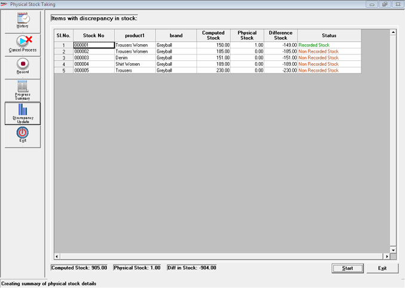

Items with discrepancy in stock screen displays the summarised format of the items present in the scope of the current stock take.

The positive stock adjustments are recorded as Miscellaneous Receipts (i.e., where physical stock is more than computed stocks). The negative stock adjustments give rise to Miscellaneous Issues (i.e. where physical stock is less than computed stocks).
The Miscellaneous Issues and Receipts are generated for the all items with discrepancy in stock.
The Difference Stock column displays the difference between Computed Stock and Physical Stock.
The Status column displays the information about the status of the physical stock- Negative Stock, NonRecorded Stock and Recorded Stock.
Note: After completion of the discrepancy updation, all the items of the defined scope can be billed. Stock Taking details are updated to the History to provide a complete track of all adjustments made in your stocks due to the discrepancies found while stock taking